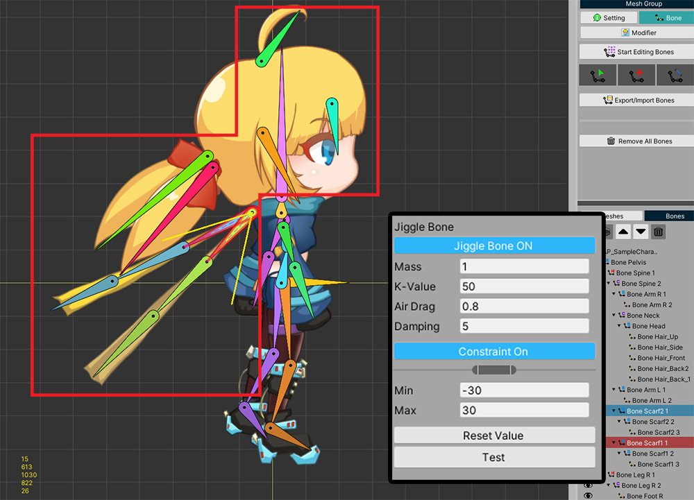

AnyPortrait > 메뉴얼 > 성능 향상시키기
성능 향상시키기
1.3.2
게임을 만들 때 실행 성능을 향상시키는 작업은 매우 중요하지만 그만큼 어려운 일입니다.
마찬가지로, AnyPortrait를 이용하여 게임을 만들 때에도 성능에 관한 이슈는 조심스럽게 관리되어야 합니다.
이 페이지에서 설명하는 몇가지 요소들은 성능 최적화에 큰 도움이 될 것입니다.
참고
- 이 페이지에서의 성능 테스트는 실행 환경에 따라서 결과가 다를 수 있습니다.
- GPU 최적화에 대해서는 관련 페이지를 참고해주세요.
- 높은 FPS를 확인하기 위해서 VSync 옵션을 비활성화하여 빌드했습니다.
최신 버전의 AnyPortrait 이용하기
저희 팀은 지속적으로 AnyPortrait의 기본적인 성능을 향상시키고자 노력하고 있습니다.
이전 버전인 v1.3.0/v1.3.1에서 상당한 애니메이션과 리깅에 대해서 높은 성능 향상을 기록했습니다.
v1.3.2에서는 리깅과 버텍스 처리에 대한 성능 향상 및 메모리 할당 문제를 해결하였습니다.
최신 버전의 AnyPortrait로 업데이트하는 것은 여러분들의 게임 성능 향상에 도움이 될 것입니다.
(위 프로파일링 결과는 아래에 설명하는 예제를 유니티 에디터 상에서 테스트한 결과입니다.)
버텍스 개수와 성능
AnyPortrait는 CPU 기반의 버텍스 처리를 하기 때문에, 버텍스 개수가 늘어날 수록 성능이 저하됩니다.
메시에 버텍스가 많아지면 그만큼 정밀하게 표현할 수 있는 반면, 높은 성능을 기대하기 어렵습니다.
반대로 버텍스가 너무 적다면 애니메이션에서 외형이 어색해질 수 있습니다.
따라서 적절한 개수의 버텍스로 메시를 구성하는 것이 매우 중요합니다.

버텍스에 따른 성능 비교를 위해 간단한 예제를 준비했습니다.
1개의 메시와 2개의 본들로 구성된 관절 애니메이션 샘플을 위와 같이 만들었습니다.

같은 애니메이션을 하지만 버텍스 개수가 다르도록 샘플을 3개로 나누어서 준비했습니다.
동일한 이미지에 대해서 12개, 42개, 86개의 버텍스들을 각각 가지도록 메시를 만들었습니다.

적은 수의 버텍스로 리깅을 적용한 화면입니다.
관절 부분에서 다소 거칠게 접히는 모습이 보이지만, 크게 이상하지는 않아 보입니다.

메시에 버텍스가 많은 경우의 리깅을 적용한 화면입니다.
리깅 가중치를 세밀하게 적용할 수 있어서 상대적으로 관절 부분의 표현이 자연스럽습니다.

관절이 접혔다가 펴지는 간단한 애니메이션을 만들었습니다.
동일한 애니메이션을 3개의 샘플에 적용했을 때의 모습입니다.
버텍스가 많을 수록 관절 부분의 표현이 정밀한 것을 볼 수 있습니다.
이 결과만 보면 버텍스가 많은 경우 애니메이션 품질이 더 좋아보입니다.
이제 성능을 테스트해봅시다.
이 간단한 샘플이 위와 같이 100개 배치되도록 스크립트를 작성하였습니다.

실시간으로 FPS(Frames Per Second)의 평균, 최소, 최대값을 볼 수 있도록 스크립트를 작성하였습니다.
이 씬을 Windows용 PC 앱으로 빌드한 이후 테스트하여 아래와 같은 결과를 확인했습니다.

위 그래프는 버텍스의 개수에 따라 FPS가 어떻게 바뀌는지 보여줍니다.
적은 수의 버텍스로 메시를 구성한 경우(Low)엔 평균적으로 650 FPS라는 높은 실행 성능이 기록되었습니다.
반대로, 많은 수의 버텍스로 메시들이 있는 경우(High)엔 평균적으로 270 FPS의 낮은 실행 성능이 기록되었습니다.
(FPS가 높을 수록 성능이 좋은 것을 의미합니다.)
즉, 버텍스 개수에 따라 성능이 줄어드는 것을 볼 수 있습니다.
애니메이션 품질과 실행 성능을 모두 고려하여, 적절한 수준의 버텍스 밀도를 유지하면서 캐릭터를 만드는 것을 권장합니다.
물리 효과 구현 방식과 성능
물리 효과는 게임 엔진에서 성능에 크게 영향을 주는 요소입니다.
AnyPortrait에도 물리 효과를 구현하는 두가지 방식이 있습니다.
물리(Physics) 모디파이어와 지글 본(Jiggle Bones)이 그것입니다.
이 두가지 기능을 사용할 경우 실행 성능이 어떻게 나타나는지 확인해봅시다.

데모에 등장하는 캐릭터에 각각 물리 모디파이어, 지글 본, 그리고 아무것도 적용하지 않은 3개의 샘플을 준비했습니다.
물리 모디파이어는 위 이미지와 같이 일부 메시에 적용되었습니다.

다른 샘플에는 지글 본을 적용하여 유사한 물리 움직임을 보여주도록 설정했습니다.

위와 마찬가지로 30개의 캐릭터가 등장하여 애니메이션되는 동안 FPS를 기록하도록 스크립트를 작성한 후, PC 앱으로 빌드하여 성능 테스트를 진행했습니다.

물리 효과를 적용하지 않은 경우에는 100 이상의 높은 FPS를 기록하였으며, 이를 기준으로 다른 물리 효과의 성능 기록을 비교해봅시다.
지글 본을 적용한 경우는 물리 효과를 적용하지 않은 경우보다 10 정도의 FPS 저하가 있었습니다.
물리 모디파이어를 적용한 경우엔 무려 30의 FPS 저하가 기록되었습니다.
특히, 물리 모디파이어를 적용한 경우의 최소 FPS는 매우 낮은 것을 볼 수 있었습니다.
물리 모디파이어는 버텍스마다 물리 재질에 따른 연산을 하기 때문에 성능 저하가 큰 기능입니다.
따라서 물리 모디파이어는 고정 프레임으로 동작하도록 개발되었습니다.
물리 모디파이어가 동작하는 프레임과 그렇지 않은 프레임의 격차가 꽤 크며, 이로 인하여 최소 FPS가 매우 낮게 나타난 것입니다.
반면, 지글 본은 상대적으로 버텍스 개수보다 적은 본을 대상으로 하며, 연산량이 매우 적은 기능입니다.
실제로 지글 본은 모든 프레임에서 동작함에도 상대적으로 높은 실행 성능을 보여줍니다.
지글 본과 물리 모디파이어가 표현하는 대상은 다소 차이가 있습니다.
하지만 만약 두가지 방식을 대체할 수 있는 경우, 지글 본을 이용해보는 것이 성능 향상에 도움이 될 것입니다.
Mono와 IL2CPP
유니티 게임은 C#으로 작성되며, 이 스크립트를 동작시키기 위해 기본적으로 Mono를 이용하여 빌드를 합니다.
하지만 유니티가 업데이트 되면서 IL2CPP라는 빌드 방식을 지원합니다.
이 방식은 C# 스크립트를 상대적으로 빠른 C++ 코드로 변경하여 실행하므로, 기존의 Mono 방식의 빌드보다 높은 실행 성능을 가집니다.
빌드하고자 하는 대상 플랫폼이 IL2CPP을 지원한다면, 이 설명이 크게 도움이 될 것입니다.
IL2CPP에 대한 자세한 설명은 공식 메뉴얼을 참고해보시길 바랍니다.
(1) 유니티 에디터의 Project Settings 창을 열고 Player 메뉴를 선택합니다.
(2) Scripting Backend의 옵션을 Mono에서 IL2CPP로 설정합니다.
이 상태로 게임을 빌드해서 실행해봅시다.
(만약 Mono 방식으로 빌드된 경로에 그대로 빌드하면 빌드가 실패될 수 있습니다.)
위의 캐릭터 예제를 Mono와 IL2CPP 방식으로 각각 빌드하여 테스트한 결과입니다.
Mono 방식에서 96 FPS를 기록한 결과에 비해, IL2CPP 방식으로 빌드한 경우 50%이상 증가한 148 FPS를 기록하였습니다.
IL2CPP는 유니티 앱의 CPU 실행 성능을 크게 향상시키는데, AnyPortrait는 거의 대부분 CPU 자원을 이용하여 동작을 하므로 최적화 효과가 매우 크게 나타납니다.
IL2CPP 빌드 옵션이 여러분의 프로젝트에 적용될 수 있는지 먼저 확인한 이후, 이를 적극적으로 활용해보실 것을 권장합니다.